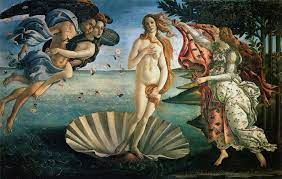
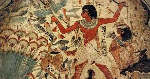
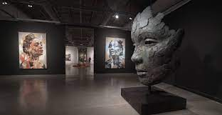

quarta-feira
20 de setembro de 2023.
Arte Renascentista
A arte renascentista foi um movimento que ocorreu entre os séculos
XIV e XVII e foi marcado por mudanças, quando resolveu quebrar com
os dogmas e os pensamentos da igreja.
O movimento que teve início na Itália, surgiu entre os séculos
XIII e XIV.A arte renascentista é um tipo de arte que nasceu com o
intuito de recriar o que foi feito por meio de técnicas avançadas
que espelhavam, com a proposta da perfeição, a imagem humana,
assim como também retratavam a natureza.(Agencia Papoca)
Leia Mais

quarta-feira
20 de setembro de 2023.
Arte Egpícia
Nascida há mais de 3000 anos antes de cristo, a arte Egpícia tem
forte ligação com religiosidade.
O interior dos templos eram extremamente elabolados, os túmulos
eram muito importantes, isso porquê os egípcios acreditavam na
vida após a morte. O objetivo da mumificação era proteger a alma
pelo resto da eternidade.O faraó contratava artistas para desenhar
e pintar nas paredes das pirâmides, que viriam a ser os seus
túmulos. Essas pinturas detalhavam a vida deles e seu entorno, de
modo que essa arte registra parte da história do Egito.
Leia Mais

quarta-feira
20 de setembro de 2023.
Arte Contemporânea
A arte Contemporânea surgiu após a segunda guerra mundial, essa arte
prevalece até os dias atuais.
A arte contemporânea prioriza a ideia e o conceito acima do objeto
artístico final. O objetivo aqui é produzir arte, ao mesmo tempo
que reflete sobre ela. Ela abandonou diversos recursos da arte
moderno, ao mesmo tempo que abriu espaço para a diversidade e
novas idéias.A mudança de eras proporcinou significativas mudanças
no meio da arte e da cultura.
Leia Mais